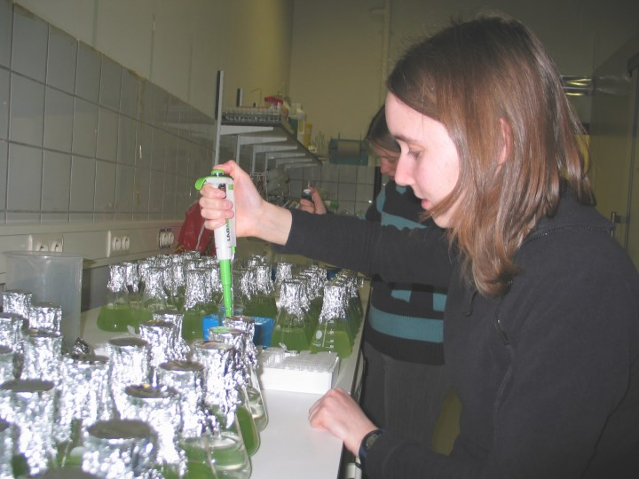

{% set title = "Cleardata - Voorbeeld projecten" %}
{% set description = "Cleardata biedt Data Analyse, Consultancy, Statistisch Advies en Bijles Statistiek. " %}

{% extends "layout.nunjucks" %} {% block content %}

    <section id="cases" class="bg-primary">
        <div class="container">
            <div class="row">
                <div class="col-md-12 text-center">
                    <h2 class="section-heading">Voorbeeldprojecten</h2>
                     <hr class="light">
                </div>
            </div>

            <div class="row">
                <div class="text-justify">
                    <div class="col-md-4 text-center example-box hidden-xs hidden-sm" id="example-intake">
                        
                    </div>

                    <div class="text-faded col-md-8">
                        <h3 class="example-header">Dataregistratie en organisatie</h3>
                        <p>
                        In een multidisciplinaire groepspraktijk geven we advies bij het reorganiseren van het databeheer. We bieden
                        hulp bij het veilig omgaan met vertrouwelijke data (persoonsgegevens)
                        en de dataverwerking. Hierdoor is er meer tijd voor de echte zorg naar patiënten, alsook meer inzicht
                        in evoluties in patiëntaanmeldingen en in de specifieke problemen die behandeld worden. Dankzij onze
                        analyses worden gerichte beslissingen genomen in het aanbod van de zorg in de praktijk!
                        </p>
                    </div>
                </div>
            </div>

            <div class="row">
                <div class="text-justify">
                    <div class="text-center col-md-4 col-md-push-8 example-box hidden-xs hidden-sm" id="example-quality">
                        
                    </div>

                    <div class="text-faded col-md-8 col-md-pull-4">
                        <h3 class="example-header">Kwaliteitscontrole</h3>
                        <p>
                        Via het opstellen en de verwerking van enquêtes wordt anoniem naar de tevredenheid van ouders gepeild van een kinderopvangvoorziening.
                        In overleg besteden we ruim de tijd aan de specifieke vragen waarop de organisatoren een antwoord
                        wensen en we rapporteren de resultaten op een begrijpbare manier naar de organisatoren toe. Zo vinden
                        zij concrete oplossingen voor enkele pijnpunten en kunnen zij zowel de kwaliteit als de tevredenheid
                        verbeteren. Goede scores motiveren om hun werk met voldoening verder te zetten!
                        </p>
                    </div>
                </div>
            </div>

            <div class="row">
                <div class="text-justify">
                    <div class="text-center col-md-4 vertical-align example-box hidden-xs hidden-sm" id="example-research">
                        
                    </div>

                    <div class="text-faded col-md-8">
                        <h3 class="example-header">Specifiek onderzoek</h3>
                        <p>
                        We werken mee aan een experimentele studie in het kader van een thesisbegeleiding op vraag van de masterstudent zelf. 
						Via hulp op maat tonen we aan hoe de verzamelde gegevens van de studie verwerkt kunnen worden op statistisch correcte wijze. 
						Mede dankzij onze begeleiding is het eindwerk op tijd klaar en heeft de student veel bijgeleerd. 
						Wij hopen studenten ook te overtuigen van het belang van correcte dataverwerking én dat statistiek helemaal niet saai hoeft te zijn!
                        </p>
                    </div>
                </div>    
            </div>

        </div>
    </section>

    {% endblock %}